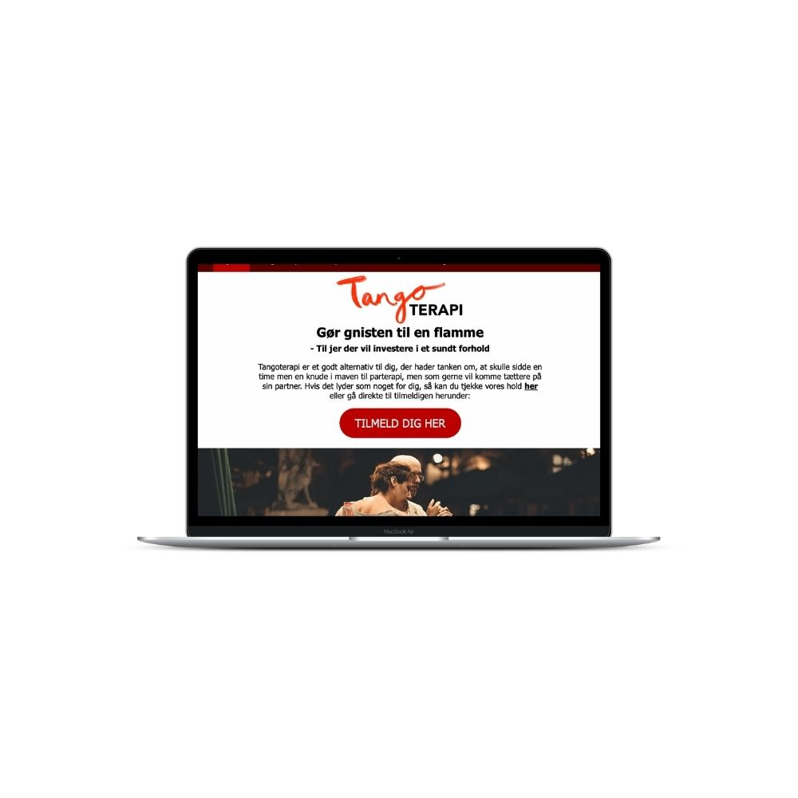

Tangoterapi
- Webdesign, UI and usersegment
I dette projekt fik vi til opgave at udarbejde digitale produkter til et specifikt brugersegment. Vores
primære fokus i dette var forløb var vores designprocess.
Vi fik uddelegeret en dans og fik til opgave formulere en designudfordring. “Hvordan får vi flere folk
til at deltage I tango?”
Vi pågyndte vores researchfase, hvor vi lavet en del deskresearch/observationer, og der begyndte der at
tegne sig en tendens, altså at der I parforhold tit kan opstå kommunikationskløft.
Vores idé var altså følgende: At tilbyde tango som et terapiforløb for par, så de igennem dansen kan
komme tættere på hinanden.
Min primære rolle i dette projekt var at lave deskresearch/observationer og målgruppeanalyse og udføre
UI. Ud fra den data vi havde indsamlet udarbejdede vi vores personaer.
